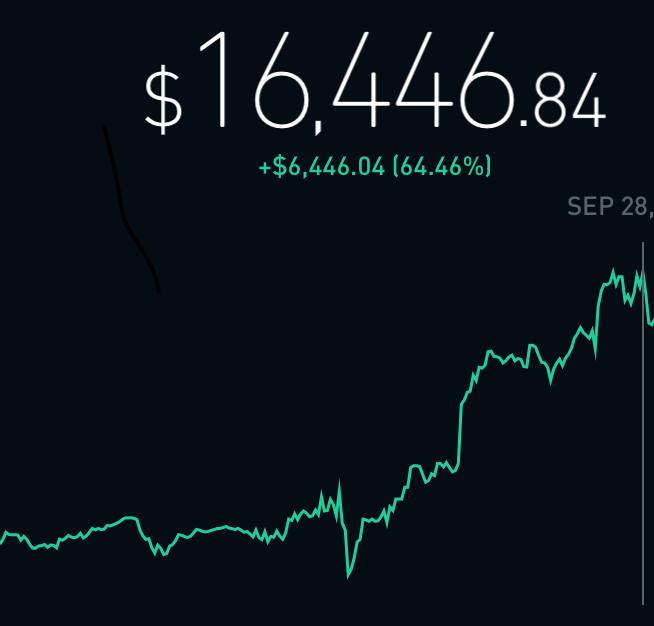

Data Science Project
I enjoy learning about finance and trading equities and etfs. Recently I started trading options. To supplement my trading I created a large program that would make predictions on earnings. I created a web parser, a data analyzer, and a neural net as parts of the overall function. I parsed for technical, fundamental, and sentiment data. I then calculated sentiment, ratios, and technicals for the stock option I was planning to trade. I put the calculated data into a neural net to predict outcomes. I was able to make 65% from the start of June to the end of September.
Finance Projects
Before I start trading options I used to day trade equities. For this I needed an application that would send me alerts of when to buy and sell. So I used VBA and the Yahoo Finanance API to create automated buy and sell alerts that were so annoying that I could not ignore them :). This ensured that I minimzed losses while making okay profit.
I also created a machine learning program for long term stock predictions for the stocks that I wanted to keep around for five to six years. This program allowed me to choose companies that had high growth and would not go bankrupt in the next few years.
Campus Caters
I had the vision of offering healthy and affordable meals to students at my school because there were not many healthy optiosn available, and if there were they were expensive. So I created a website to allow people who made food on campus to sell it to others for a flat rate of $5. Convenient, Affordable, and Healthy! Currently in seed money application process
DHANTEK INC
DHANTEK INC is an LLC owned by my parents where I am a partner. I lead the Amazon, Ebay, and Walmart storefronts currently using tools and algorithms to select most profitable products to sell on Ebay Amazon and Walmart.com
Crypto Currency HFT
Idea I presented to two of my friends. Basically we would trade at a high frequency in the ever changing crypto market. The algoirthim we are coming up with consists of choosing the the most profitable path between all crypto exchange rates. This would be more efficient than the traveling salesman problem because we would elminate paths that are negative or a certain percent negative.
AWS
- Cognito
- IAM
- Lambda
- Chatbot
- Amazon Alexa Skills
- Virtual Bot Sumerian
Website
- Cognito
- IAM
- Lambda
- Chatbot
- Amazon Alexa Skills
- Virtual Bot Sumerian
Website
I have mostly done backend software development but ever since working on full stack at JPMorgan I started to like front end too. I created this personal website to portray my skills as a software developer and to have fun doing it. This website took a while to complete because of a cool and unique feature: A CHAT BOT!!!!
Python
Python is my favorite language and I have worked with a huge arsenal of libraries and created programs in python totaling over 12,000 lines of code all together. I recently started using python when I entered College. The syntax is very simple and contrary to popular belief it is actually easy to use it with object oriented programming
Intensive Programming in Linux
Developed a extensive knowledge of linux including but not limited to regular expressions, shell scripting, sorting algoritims in linux (radix sort), linux commands, how c can be used in linux, parsing, calling multiple files
Programming Lang Concepts (work currently being added)
In this class I developed an advanced knowledge of programming languages and how they work. I was tasked with creating a lexica file to understand tokens passed into a programming language, creating a parser that would read in the tokens passed, and an interpreter that would perform the correct operations that came up when parsing.